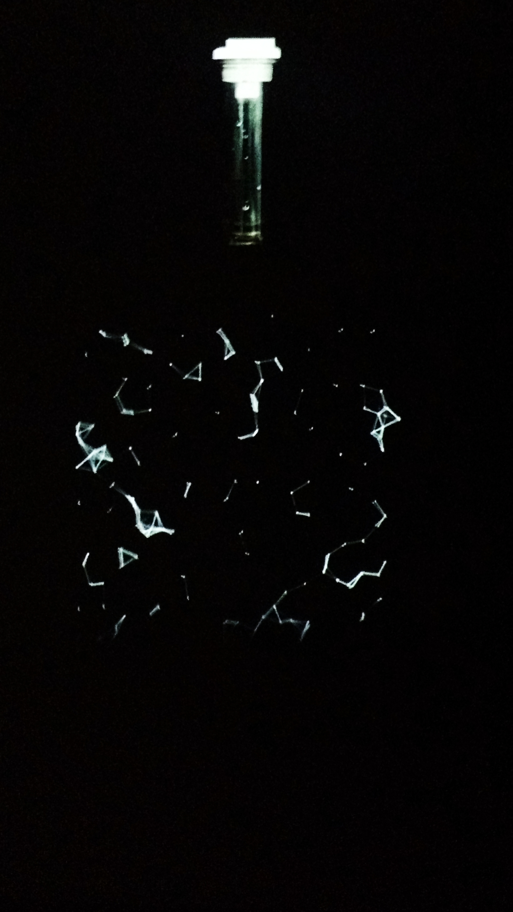
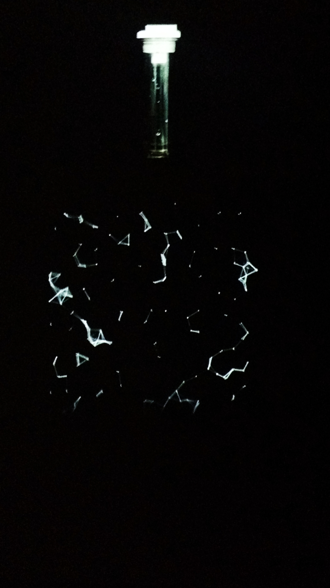

Chaos theory states that although the behavior of a single element may seem disordered, looking at multiple elements on a larger scale can lead to patterns being found in their chaos. My installations explore this theory in the context of how we experience human relationships: while our personal experiences with others are wholly unique and unstructured, there can be patterns between our experiences when we look at them at mass and from afar. In my case, I represent a human system as a family, and through this I can create a network structure where chaotic familial relationships can be studied at on different levels and scales, updating the old linear structure of a "family tree."
 
The themes of my pieces are drawn from interviews with many others on the prevalent family issues in their lives, such as chronic illness and domestic abuse. Each piece has a film component and a generative art component interacting with each other-- the film represents the issue at hand on a tangible human scale, while the generative art represents the motion and flow of people and their experiences on an abstract level. I found that our experiences with relationships can be compared with the behaviors of elements on molecular or universal scales, and these analogies ended up driving my themes. By applying the unstable bonds of molecules or the entropic behavior of pieces to our own experiences with disorder, I hope to further mine and others' understanding of how complex relationships can be, yet how simple it can be to understand them.
code & illustrations © Nina Dinh 2017